The Intersection Euler Characteristic Profile
Euler Calculus, Stability, and Certified Topological Interaction of Point Clouds
16 November 2026
How much do they interact?
How much do several point clouds interact topologically, and at what scale?
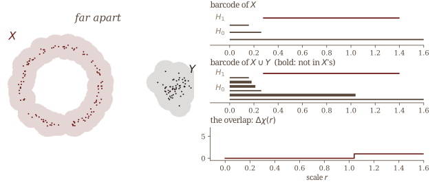
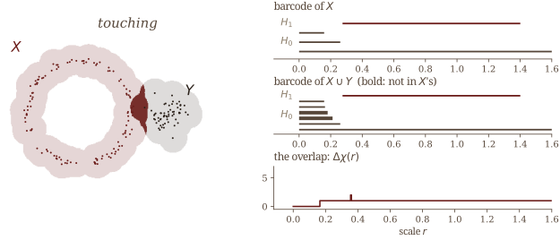
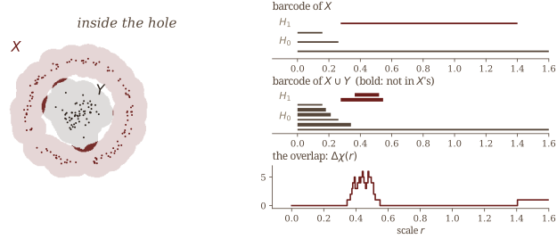
Far apart. X’s barcode ignores Y; that of X\cup Y gains a bar dying at half their distance. The overlap stays empty until the balls meet.
Touching. The overlap is a lens: \Delta\chi=1.
Inside the hole. X\cup Y’s barcode changes X’s own loop (it dies at 0.55, not 1.40) and gains the gap’s. The overlap is the meeting.
§ I. Euler Calculus
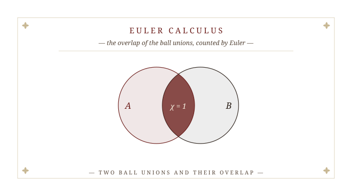
The profile
For pairwise disjoint finite clouds \mathcal X=(X_1,\dots,X_k) in \mathbb R^d, with \mathcal U(X;t)=\bigcup_{p\in X}B(p,t), and scales \mathbf t\in\mathbb R^k_{\ge0}, \Delta\chi(\mathbf t;\mathcal X)\;=\;\int_{\mathbb R^d}\prod_{i=1}^k \mathbf 1_{\mathcal U(X_i;t_i)}\,d\chi .
\Delta\chi(\mathbf t;\mathcal X)\;=\;\chi\Big(\bigcap_{i=1}^k\mathcal U(X_i;t_i)\Big). On the diagonal, for two clouds, \Delta\chi(r)=\chi_X(r)+\chi_Y(r)-\chi_{X\cup Y}(r).
An integer-valued curve, not a diagram: it enters a test or a learning pipeline as it is, with no vectorization.
Three configurations
At the marked scale the overlap is empty, a single region, and an annulus: \Delta\chi=0,\ 1,\ 0. The encircling clouds meet, yet \chi of an annulus is 0.
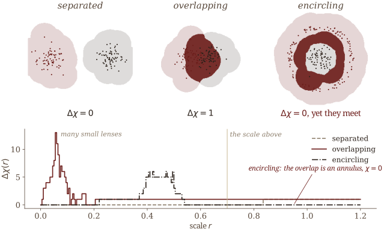
Why not persistence of the overlap?
For A=\mathcal U(X;t), B=\mathcal U(Y;s) and \Delta\beta_q=\beta_q(A)+\beta_q(B)-\beta_q(A\cup B), \beta_q(A\cap B)=\Delta\beta_q+\delta_q+\delta_{q+1}, with \delta_q the rank of the connecting map H_q(A\cup B)\to H_{q-1}(A\cap B). The alternating sum cancels the \delta’s: \chi(A\cap B)=\chi(A)+\chi(B)-\chi(A\cup B).
The nerve of the cross-cloud lenses B(x,t)\cap B(y,s) computes the overlap. It has up to mn vertices, and \ell lenses with a common point span 2^\ell-1 faces, with \ell as large as mn.
\Delta\chi is the Euler characteristic curve of the overlap filtration, the alternating sum of its Betti curves, read off the Alpha complexes of the clouds and of their union: cheap enough for 999 permutations per test. The persistence of the overlap is stable too (Theorem 4), and the paper refines \chi by a relative module.
On an annulus \beta_0=\beta_1=1 and \chi=0: the encircling clouds. Hence the guard of § III.
Why this curve
Let \Phi assign to each \mathcal X an integer profile, with
- pointwise Euler form: \Phi(\mathcal X)(\mathbf t)=\int\varphi\big(\mathbf 1_{\mathcal U(X_1;t_1)},\dots,\mathbf 1_{\mathcal U(X_k;t_k)}\big)\,d\chi for some \varphi:\mathbb Z^k\to\mathbb Z, \varphi(\mathbf 0)=0;
- separation: \Phi(\mathcal X)(\mathbf t)=0 when the k-fold overlap is empty;
- normalization: \Phi(\mathcal X)(\mathbf t)=1 when the overlap is a single lens \bigcap_i B(x_i,t_i).
Then \Phi=\Delta\chi.
It decides which Euler-level summary of the overlap, not that its value measures strength: \chi is signed and not monotone. A stronger form asks only for a valuation in each cloud that depends on the overlap’s homotopy type, with separation and normalization.
§ II. Computation and Stability

Computation
For |X|+|Y|=n in fixed dimension d, sweeping the Alpha complexes of X, Y and X\cup Y in birth order computes \Delta\chi in O\big(n^{\lceil d/2\rceil}\log n\big) time and O\big(n^{\lceil d/2\rceil}\big) space, forming no boundary matrix.
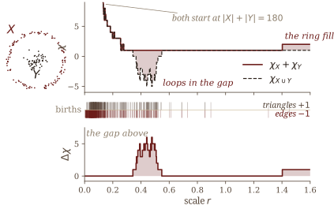
Each Euler characteristic curve is a running sum \sum_{a(\sigma)\le r}(-1)^{\dim\sigma} over simplices sorted by birth. No persistence reduction.
In even d the exponent is optimal for any algorithm that builds the filtration. k clouds by inclusion–exclusion, O\big(2^k n^{\lceil d/2\rceil}\log n\big); off the diagonal, a weighted Alpha complex.
Stability
Let \epsilon=\max_i d_H(X_i,X_i'). The overlap filtrations of \mathcal X and \mathcal X' are \epsilon-interleaved; \Delta\chi(r)=\Delta\chi'(r) whenever [r-\epsilon,r+\epsilon] holds no critical scale of either; and \|\Delta\chi-\Delta\chi'\|_{L^1}\le2\epsilon\,(N+N'), with N,N' the numbers of bars.
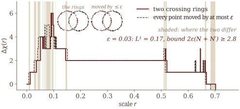
\Delta\chi itself admits no interleaving distance, and no L^1 bound free of the bar count can hold.
Consistency
Let A_1,\dots,A_k\subset\mathbb R^d be compact with reach at least \tau>0, sampled i.i.d. from measures supported on them and positive on balls; let \rho\mapsto T_\rho=\bigcap_i\mathcal U(A_i;\rho) have finitely many critical values in (0,\tau), and r\in(0,\tau) be regular for it. Then almost surely, for all large samples, the \epsilon_{\max}-persistent Euler characteristic of the sample overlap equals \chi(T_r), where \epsilon_{\max}=\max_i d_H(X_i,A_i)\to0; and if r is also regular for the sample, \Delta\chi(r;X_1,\dots,X_k)=\chi(T_r) exactly.
O\big(\epsilon^{-k_i}(\log\tfrac1\epsilon+\log\tfrac1\delta)\big) points from A_i for confidence 1-\delta, with \epsilon set by the distance from r to the critical scales: the intrinsic dimension k_i, not the ambient d.
§ III. Certified Interaction
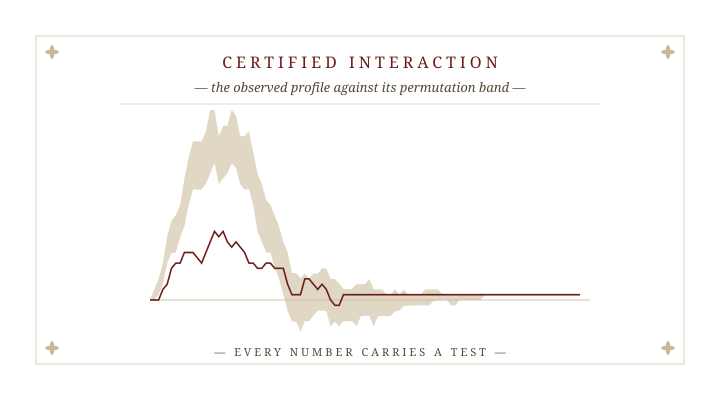
Every number carries a test
With \Phi(\Delta\chi)=\int|\Delta\chi(r)|\,dr, \widehat E=\frac{\Phi\big(\Delta\chi(\cdot;X_1,\dots,X_k)\big)}{\mathbb E_{H_0}\,\Phi}\,, about 1 when the labels are exchangeable, tending to 0 under separation.
If the labels of the pooled sample are exchangeable, the two one-sided permutation p-values satisfy \Pr[p\le\alpha]\le\alpha for every statistic, every \alpha, every sample size and every number B of permutations.
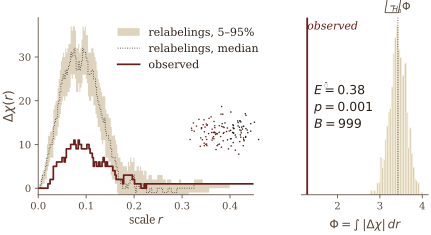
A separation claim is withheld when \Delta\chi is silent just beyond the first interaction scale \hat r^\ast, where the unions provably meet. Unguarded, the test certifies an annular overlap as separated, with probability tending to one.
Monsoon onset
A four-signal onset detector: the profile between the delay-embedded windows before and after each day, with complexity variance, Higuchi fractal dimension and a rolling mean. Delete the profile, or swap it for a channel that sees no data, and test the paired change in error.
| onset | system | years | with | without | \DeltaMAE, days (95% CI) | p | vs. null channel | p |
|---|---|---|---|---|---|---|---|---|
| moderate | Nepal | 48 | 9.27 | 9.38 | -0.10 [-1.48,\,1.21] | 0.905 | +1.94 | 0.028 |
| sharp | Kerala | 45 | 6.18 | 7.02 | -0.84 [-2.07,\,0.38] | 0.200 | +0.11 | 0.887 |
| gradual | Western North Pacific | 66 | 17.36 | 20.39 | \mathbf{-3.03} [-4.89,\,-1.15] | 0.003 | -1.02 | 0.246 |
| gradual | Australian | 61 | 16.52 | 20.18 | \mathbf{-3.66} [-5.13,\,-2.21] | < 0.001 | -1.00 | 0.204 |
Where onset is gradual, deleting the profile costs three days, but a channel that sees no data recovers two thirds of that: about one day is the topology’s, and it does not reach significance. The firmer evidence is at the detector level: the multi-delay profile is the best unsupervised onset detector on both gradual targets. Paired sign-flip tests, 10^5 sign assignments. With Atish Mitra, Santanu Nandi, Md Nurujjaman and Buddha Nath Sharma.
Disentanglement, certified
Class-conditional clouds of 111 trained networks: 1{,}170 (network, layer, checkpoint) cells, 52{,}650 certified pairwise measurements.
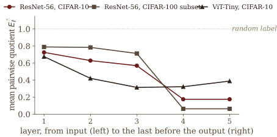
The mean pairwise quotient falls with depth: 0.72\to0.63\to0.57\to0.18 on ResNet-56, CIFAR-10.
12{,}375 paired sign-flip tests between consecutive checkpoints, on a scale-free statistic: 2{,}707 significant steps, 2{,}026 of them decreases, 1{,}728 within the first 8 epochs.
Mostly pairwise
For classes c,c',c'' at layer \ell: \ \rho_\ell=\widehat E_\ell(c,c',c'')\,\big/\,\max\big\{\widehat E_\ell(c,c'),\widehat E_\ell(c,c''),\widehat E_\ell(c',c'')\big\}. Only a k-fold profile can pose it.
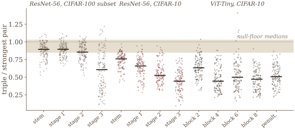
\rho\le1 in 1{,}509 of 1{,}560 cells (96.7\%), median 0.63. An unstructured null already reaches 83\%; the evidence is the medians, 0.44–0.89 against 0.85–1.03 (p=3.3\times10^{-8}). A regularity, not a law.
Memorization, counted
Does a generator copy its training images? Compare its samples’ overlap with training images T and held-out images H; if it copies nothing, relabelling T and H is an exact null.
T_{\rm small}=\int_0^{r_0}|\Delta\chi(r;G,T)|\,dr-\int_0^{r_0}|\Delta\chi(r;G,H)|\,dr below the near-duplicate scale r_0, where excess overlap components count distinct images copied.

CIFAR-10 diffusion models at r_0: 132 against 7 on a 200-image memorizer, 13 against 14 on the control. With Pramita Bagchi.
Of 24 generators that copy nothing, a nearest-neighbour statistic rejects 7, T_{\rm small} one; a count at r_0 is as specific. The profile adds steadiness in r_0 and a 3-fold form.
What remains
\chi is signed and blind on annuli. The paper’s relative-homology refinement sees them and is stable; can a test use it directly?
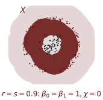
A different scale per cloud: what does the two-parameter profile \Delta\chi(r,s) certify that the diagonal cannot?

Statistical Inference for Topological Interaction · Reconstruction of Transversal Intersections from Separate Samples
Thank you
arXiv:2608.06180 · arXiv:2609.08561 · arXiv:2604.15262 · arXiv:2610.00251 · smajhi.com · s.majhi@gwu.edu
Joint work with Kazuhiro Kawamura and Atish Mitra. SIAM Conference on Mathematics of Data Science · Salt Lake City · 16 November 2026.
Mixup barcodes
The mixup barcode of Wagner et al. is the image persistence of \mathcal U(Y;r)\hookrightarrow\mathcal U(X\cup Y;r). It keeps graded homology that \Delta\chi collapses, yet it does not determine \Delta\chi, which needs \chi of one cloud alone. The comparison is by properties.
| mixup barcode | \Delta\chi | |
|---|---|---|
| symmetric in the clouds | no | yes |
| k>2 clouds | open | inclusion–exclusion |
| hypothesis test | open | exact permutation tests |
| cost | image persistence, cubic in the simplex count | sweep, O(n^{\lceil d/2\rceil}\log n) |
| measured, identical clouds | 31.7 s per pair | 3.7 s per pair |
Timing on the final-epoch representations of 104 networks (arXiv:2609.08561). In fairness: there, total mixup predicts generalization better than the null-normalized quotient, R^2=0.84 against 0.34.
The relative refinement
What each cloud adds to the others: \mathrm{RPH}_*(\mathcal X)=\bigoplus_{i=1}^{k}\Big\{H_*\big(\mathcal U(X_i;t_i),\ \mathcal U(X_i;t_i)\cap\textstyle\bigcup_{j\ne i}\mathcal U(X_j;t_j)\big)\Big\}_{\mathbf t\ge0}.
For color-matched perturbations, \epsilon=\max_i d_H(X_i,X_i'), d_I\big(\mathrm{RPH}_*(\mathcal X),\mathrm{RPH}_*(\mathcal X')\big)\le\epsilon in the multiparameter interleaving distance.
Sample Y on a torus and X on a longitude: the overlap is a band and every \chi vanishes, yet H_1(T^2,S^1)=H_2(T^2,S^1)=\mathbb Z. For k\ge3 it is not complete, and it needs persistence rather than a sweep.
High dimensions
For an orthogonal projection P and r^\ast(X,Y)=\tfrac12\min_{x\in X,y\in Y}\|x-y\|, r^\ast(PX,PY)\le r^\ast(X,Y): offsets disjoint in the shadow are disjoint in the ambient space.
Measure on a PCA shadow fitted to the pooled clouds, blind to labels, so the tests stay exact: d_0=5, or 4 for triple scans. Depth conclusions are unchanged at d_0=3,4,6: median Spearman 0.91, 0.96, 0.97 against d_0=5.
Concentration of measure. In embeddings of high effective rank the scale window collapses: on copy-detection features (effective rank 574) the topological statistics go null while a nearest-neighbour fraction still fires (arXiv:2610.00251).
The guard in practice
Zero firings in 52{,}650 pairwise measurements (42{,}570 distinct clouds), and zero again when 45{,}225 cells were re-evaluated under three forms of the guard. Class overlaps are blobs: \Delta\chi first returns to zero a median 78 of 181 grid points after contact. Zero says the pattern never occurred, not that cancellation is impossible.
X uniform on a disc, Y on a circle inside it: the overlap is an annular band, and the unguarded test certifies separation at p_\downarrow=0.005. The first interaction scale, \hat r^\ast=0.005<0.40, blocks it, at no cost: it falls out of the same sweep.
Simpler statistics
| question | simpler statistic | the profile |
|---|---|---|
| rank MNIST pairs by confusability (Spearman) | 5-NN 0.86, probe 0.83, energy 0.77, Fisher 0.74 | quotient 0.83 |
| memorization: of 24 generators that copy nothing, rejected | nearest-neighbour 7, count at r_0 0 | T_{\rm small} 1 |
| memorization: copies needed to be seen, of 500 | nearest-neighbour 50 | T_{\rm small} 10, as the count |
| monsoon onset against persistence diagrams | — | ahead by 8.2 days (WNP), 11.6 (Australian) |
Often a simpler statistic does as well, and the papers say so. What the profile adds is the exact certificate, the k-fold terms and the scale resolution. MMD has not been benchmarked.
The Intersection Euler Characteristic Profile · S. Majhi · SIAM MDS26, MS8 · 16 November 2026